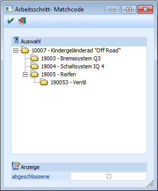

Wenn Sie auf die Lupe neben dem Feld "Arbeitsschritt" oder F9 drücken, erhalten Sie eine Aufstellung (in Form einer Baumstruktur) der in diesem Produktionsauftrag vorhandenen Arbeitsschritte.

Innerhalb des Bereichs "Auswahl" werden die unterschiedlichen Arbeitsschritte in Form eines Baums dargestellt. Dabei stellt jeder Produktionsartikel (Halbfertig- bzw. Fertigprodukt) des Auftrags einen eigenen Arbeitsschritt und somit einen Eintrag da.
Wird vor einem Arbeitsschritt ein angezeigt, weist dieses darauf hin, dass für die Fertigung dieses Artikels mindestens ein weiterer Produktionsartikel (Halbfertigprodukt) benötigt wird. Wenn der Eintrag markiert ist, können alle Arbeitsschritte des aktiven Eintrags durch Drücken der Leertaste bzw. durch Drücken der linken Maustaste auf das Symbol angezeigt werden.
Wenn ein Arbeitsschritt geöffnet wurde, wird dieser mit dem Symbol versehen. Durch einen Mausklick auf das Symbol bzw. durch Drücken der Leertaste werden die in dem Arbeitsschritt aufgeführten Einträge wieder geschlossen.
Übernehmen können Sie den gewünschten Arbeitsschritt in das Eingabefeld, indem Sie sie mit der Maus einen Doppelklick ausführen oder mit den Cursor-Tasten den Arbeitsschritt und RETURN drücken.
Ø Anzeige abgeschlossene
Durch Aktivierung dieser Checkbox, werden auch die bereits endgemeldeten Arbeitsschritte des Produktionsauftrags angezeigt.
Durch Drücken der ESC-Taste wird das Fenster geschlossen.